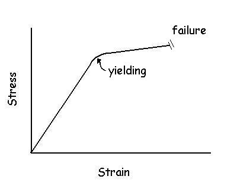
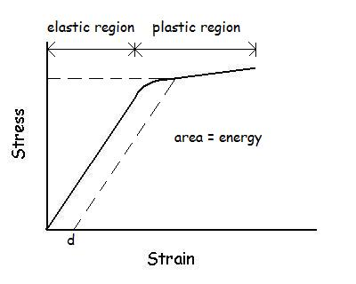

Stress and Strain of Bone
The purpose of the skeletal system is to protect internal organs, provide rigid links (segments) and attachment sites for muscles in order to facilitate body movement. Bone is self-repairing and can alter its properties and configuration in response to changes in mechanical demand. Up until now, we have considered human limb segments to be rigid links but in reality, no object is absolutely rigid. When forces are applied to an object, it deforms. Some objects deform a lot (i.e. a rubber band) and some objects deform only slightly (i.e. a steel bar). Click here if you wish to go back to the lecture on strain energy.

Mechanical Properties of Bone:
1) Stress - The force or load applied to an object is more correctly called a stress. Stress is the force normalized to the cross-sectional area of the object. The larger the object, the greater the force required for a given stress.
2) Strain - The more stress applied to an object, the greater the object deforms. Strain is the deformation expressed as a percentage of the object's non-deformed size.
The graph above shows the typical response of an object. As the stress increases, so too does the strain. At moderate levels of stress, the relation is linear but as the stress becomes extreme, there is yielding and ultimately failure when the stress becomes large enough to break the object.
3) Strength - The maximum amount of strain that the material can withstand without failure is known as the strength of the material.
4) Stiffness - The slope of the stress/strain relation is called stiffness. Stiffness is also the inverse of compliance.

5) Strain Energy - The area under the stress/strain relation.
6) Elastic Region - The range of strain that does not result in yielding
7) Yielding and Permanent Deformation - If a load is applied that exceeds the elastic region but does not reach failure (dashed line), some yielding occurs and when the object is unloaded, there will be some permanent deformation (d).
Composition:

There are two main types of bone (Cancellous and Cortical). Cancellous bone is made up of individual trabeculae, each with it's own stiffness, that form a structure that has it's own unique stiffness. Therefore cancellous bone has a material stiffness, which is the stiffness of each trabeculae, and a structural stiffness, which is the stiffness of the trabecular structure. Most biomechanical studies of cancellous bone concentrate on structural properties because material properties of trabeculae are difficult to measure. These structural properties vary for different anatomical regions depending upon the cancellous bone density and trabelcular orientation (Turner and Burr, 1993). Cortical bone represents nearly 80% of the skeletal mass. It is also called compact bone, because it forms a protective outer shell around every bone in the body. Cortical bone has a slow turnover rate and a high resistance to bending and torsion. It provides strength where bending would be undesirable as in the middle of long bones. Cancellous (sometimes called Trabecular or Spongy bone) which is predominately at the ends of long bones. It is less dense, weaker and less stiff than Cortical bone which is located more on the outer layer.


Age Effect:
With aging, we lose trabeculae and bone mineral content and our bones become more stiff and less able to withstand stress. The diagram to the right shows how the older bone fails at a lower level of strain and stress. Since the area under the curve is energy, older bone cannot absorb as much energy as younger bone which makes it much more likely to fracture in the case of a fall.

Dual Xray Absorptiometry (DXA) that we looked at in the anthropometry lectures is often used to assess the level of bone mineral content and risk of osteoporosis. The figure on the left shows the changes in bone mineral content over the life span for men and women. If a 40 year old woman is more than two standard deviations below the average, she is considered to either have osteoporsis or at a high risk of getting osteoporosis. It is important to note that the bone mineral content is not necessarily equal to bone quality or bone strength. Computer tomography can be used to further examine the 3D structural integrity of the trabecular network and in regions of high risk.
Types of bone Loading:
a) Tension - forces at the ends pulling away from each other.
b) Compression - forces at the end pushing toward each other.
c) Shear - transverse force across the long axis.
d) Bending - see full discussion below.
e) Torsion - twist about the long axis.
f) Combined loading - most bone loading results in a combination of loading types. Bending is actually a combination of tension on one side and compression on the opposite side. As a structure, bone is different than artificial materials insomuch as it will fail first in tension. Most materials can withstand considerable more stress in tension than in compression but bone is the opposite.
Rate of loading:

Due to visco-elastic properties of bone, the stiffness and ultimate strength increase as the rate of loading increases.
Shear and Bending Moment of a Beam:
We will use the situation of "three point bending" to illustrate the shear forces and bending moment that act on a beam. In this case, the beam is supported by two forces (S1 and S2) with a distance (L) between them and an applied force (F) in the middle.

Example: Find the shear force and bending moment given: F = 100 N, L = 0.7 m, l = 0.4 m

The sheer force is 57.1 N and the bending moment is 17.14 N.m. The beam will fail because of the bending moment, not the sheer force. Therefore, the strength of the beam depends on its ability to withstand bending stress.
Bending Stress and the Area Moment of Inertia:

Bones are not rectangular beams but their shape has an effect on the stress and the loading direction. The shape of bones is governed by needed attachment points for muscles and skeletal strength in the face of typical loading activities. Bones also house the marrow necessary for red blood cell production which requires them to be hollowed. Does this loss of bone material inside cause a decrease in bone strength?
How Much Weaker are Hollow Bones?
To examine this issue, we will consider the bone to be a circular rod. In the example below, Bone A is a solid rod with a diameter of 2.0 cm (radius = 1.0 cm). Bone B also has a diameter of 2.0 cm but a 1.0 cm diameter section has been removed from the center.

The hollow bone has a lower area moment of inertia with the same value for C which means that it will experience greater stress for the same bending moment. However, it also has less mass since material was removed from the center. If we were to add the mass removed from the center to the outside so the two bones had the same mass, we would increase the area moment of inertia and also increase C. In this case, the mass from the center increases the radius to 1.118 cm.

Therefore, hollow bones are actually stronger than solid bones of the same mass. This is why bicycle frames are made of tubes rather than solid rods. Ultimate bending stress of human cortical bone has been found to be about 208 N/mm2. If a bone had a diaphysis (shaft) of 20 cm in length, an area moment of inertia of 1.178 cm4, and a center distance of 1.118 cm, it could withstand a bending moment of 20800(1.178)/1.118 = 21900 N.cm or 219 N.m. If a load was placed half way between two supports 20 cm apart, the shear force would be 2190 N and the load would be 4380 N. If the bone was solid, the bending moment would only be 163.3 N.m and it could only withstand a load of 3266 N.
As mentioned earlier, bone loading is often a combination of loading types and bending strength is not the only concern. If the hollow gets too large and the shell too thin, the bone strength is compromised for impact or shear strength. Birds have bones that are more hollow because mass is a greater concern than strength for flight.
Fatigue Fracture:
Repeated loading at strains below the ultimate strength can still cause failure in any material if the frequency and number of repetitions is high enough. A common experience is to bend a coat hanger back and forth until it breaks into two pieces. Fatigue microdamage is responsible for this type of failure. Running and skiing injuries involving bone fracture often occur after a long session of activity and the microdamage may be a contributing factor. However, it may also be due to muscular fatigue because the muscles play a role in reducing bone stress. Muscles crossing human joints produce moments of force but they also produce compressive forces. As we have seen, a bending moment places one side in tension and the other in compression. Since bone fails first in tension, the compressive muscle forces reduce the tension caused by bending. Therefore, it could be the loss of muscle force due to fatigue that does not provide sufficient protection to a bending moment that causes the fracture. A skiing fall late in the day may result in more damage than a similar fall earlier in the day due more to muscular fatigue than to microdamage in the bone itself.
Unlike artificial materials, bone is self repairing and the microdamage caused by repetitive loading is of less concern because over time, the bone can remodel and repair the microdamage.
Bone Remodeling:
Bone can adapt by changing its size, shape, and composition (Wolff's Law). Modeling refers to the rapid changes in size and shape during development and is greatly reduced in adult bone. However, exercise can achieve results post adolescence.The remodeling of bone in response to loading is achieved via mechanotransduction, a process through which forces or other mechanical signals are converted to biochemical signals in cellular signaling. Mechanotransduction leading to bone remodeling involve the steps of mechanocoupling, biochemical coupling, signal transmission, and cell response. The specific effects on bone structure depends on the duration, magnitude and rate of loading. When loaded, fluid flows away from areas of high compressive loading in the bone matrix. Osteocytes are the most abundant cells in bone and are also the most sensitive to such fluid flow caused by mechanical loading. Upon sensing a load, osteocytes regulate bone remodeling by signaling to other cells with signaling molecules or direct contact. Additionally, osteoprogenitor cells, which may differentiate into osteoblasts or osteoclasts, are also mechanosensors and may differentiate one way or another depending on the loading condition. The mechanical properties of the bone material are matched to mechanical loads by remodeling. That is, the material properties are changed rather than the bone geometry.
Three Rules for Bone Adaptation to Mechanical Stimuli:
1) Bone adaptation is driven by dynamic rather than static loading. Strain is important and explains why gymnasts have greater bone density than swimmers. Plyometric exercise may be particularly beneficial.

2) Only a short duration of mechanical loading is necessary to initiate an adaptive response. Long periods have diminishing returns. Bone mass (as a percent of controls) = 100 + 11 log(1 + N) where N is the number of cycles per day.
3) Bone cells accommodate to a customary mechanical loading environment. They are less responsive to routine loading signals.
Reference:
Turner, C.H. and Burr, D. (1993) Basic biomechanical measurements of bone: A tutorial. BONE, 14:595-608.